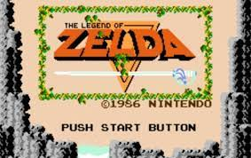
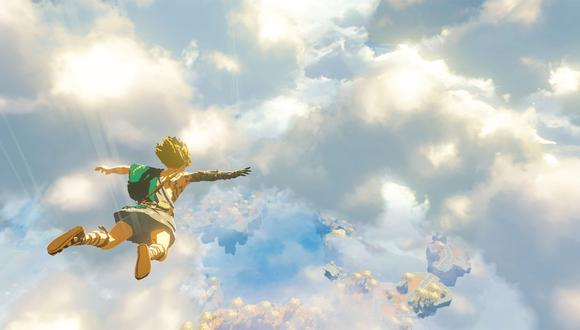

La cronología de The Legend of Zelda hasta a finales de 2011 había sido uno de los debates más intensos sobre la saga entre fans. Este debate se vió concluido una vez que Nintendo publicó el libro Hyrule Historia, donde revelaba la cronología oficial. Hyrule Historia es un libro publicado el 21 de Diciembre de 2011 para el 25° Aniversario de The Legend of Zelda, con Akira Himekawa, Shigeru Miyamoto y Eiji Aonuma como sus principales autores. En el libro, se detallan distintos aspectos sobre cada juego de la saga, además de dar a conocer por fin lo que por años fue el mayor misterio de todos, la Cronología Oficial de los juegos de Zelda. Hyrule Encyclopedia, el cual es un libro posterior, cuenta con un objetivo similar, el cual es complementar con mayor información sobre la franquicia. A la hora de desarrollar la cronología en está página, se tendrá en cuenta estructura e información dada en medios oficiales como lo son Hyrule Historia, Hyrule Encyclopedia y los propios juegos de la saga. No obstante, existirán algunas inconsistencias de acuerdo a lo dicho por Hyrule Historia y Hyrule Encyclopedia, que se explicarán en el apartado inconsistencias de este mismo artículo. En estas crónicas presentamos únicamente los datos de los que podemos estar seguros en el momento presente, ya que aún quedan muchos puntos oscuros por descubrir. Además, la historia cambia y se reescribe a medida que evolucionan las eras y según aquellos que la cuentan. Pequeños cambios que pudieron parecer intrascendentes en su momento pueden convertirse en puntos de partida para nuevas leyendas e incluso podrían cambiar la historia para siempre.
Link es descrito generalmente como un joven Hyliano que reside en el Reino de Hyrule. En sus inicios, aparecía como un simple espadachín, pero con el paso del tiempo y el lanzamiento de nuevos juegos, su edad (en un rango que oscila entre los diez y los dieciocho años), apariencia e identidad han sido cambiadas.
La Princesa Zelda personaje ficticio de la saga de videojuegos The Legend of Zelda, de la compañía Nintendo. Es una joven, perteneciente a la ficticia raza hyliana. Es la princesa del reino de Hyrule y, desde que se cumple la leyenda en The Legend of Zelda: Ocarina of Time y la Trifuerza se divide, la poseedora del fragmento de la Sabiduría. Es la encarnación mortal de la diosa Hylia. Al igual que Link, Zelda no siempre es el mismo personaje en todos los juegos. Esto se debe a que fue maldecida por el Heraldo de la Muerte, el rey de los Demonios, a morir y reencarnarse sin descanso durante toda la eternidad para enfrentarse al mal.
Ganondorf y de apellido Dragmire, es un personaje ficticio y antagonista principal en la saga de videojuegos The Legend Of Zelda. Es la reencarnación del heraldo de la muerte, además de un gran hechicero con una inmensa fuerza física y poder místico, complementada con una gran astucia y resolución. Conocido también como el Gran Rey Malvado o el Señor de las Tinieblas, ha tratado en diversas ocasiones de completar la Trifuerza y, con ella, conquistar el reino de Hyrule.
La historia de la Cronología de la saga The Legend of Zelda ha evolucionado a lo largo de la historia, tanto en la historia oficial, así como en sus diversas interpretaciones. Durante mucho tiempo, la Cronología ha sido el mayor misterio entre los fans de la saga. El método trascendental y profundo de Nintendo de la incorporación de la fórmula "jugabilidad primero e historia después" no sólo ha producido algunos de los mejores juegos de todos los tiempos, sino que también ha dado lugar a una incoherente cronología, llena de cabos sueltos, contradicciones y confusión general. Afortunadamente, esto ha motivado a los aficionados a hacer todo lo posible para filtrar, ordenar y organizar el contenido de carácter canónico sobre The Legend of Zelda. Desde la época de Pong, las historias de los videojuegos han sufrido una evolución increíble, pasando del simple conflicto de "matar al malo", para "salvar a la princesa", a historias épicas y maravillosamente profundas. Los primeros tramos de la saga de Zelda surgieron en un punto muy interesante de este proceso, un punto en el que el mercado se divide entre los juegos de plataformas casuales y los centrados en el RPG.
Ni mucho menos fue el primer videojuego de aventuras, pero no cabe duda de que acabó siendo el que mejor representó esa palabra. Un 21 de febrero de 1986, hoy hace 35 años, las tiendas de Japón recibían la llegada de The Legend of Zelda para la consola de 8 bits de Nintendo, la primera entrega de una de las franquicias más queridas de la compañía de Kioto y un juego que marcó un antes y un después gracias a la gran libertad que ofrecía al jugador. The Legend of Zelda salió a la venta cinco meses después del clásico Super Mario Bros., pero su desarrollado fue en paralelo a este, un detalle importante, ya que ambos juegos resultaron tan revolucionarios como opuestos. Mientras el título protagonizado por Mario ofrecía un desarrollo lineal, el debut de la serie protagonizada por Link no marcaba cuál era el camino a seguir.

El E3 2021 trajo más de una sorpresa para los más fieles fanáticos de Nintendo y sus títulos. La incorporación de Kazuya -de Tekken- como el nuevo personaje para Smash Bros. Ultimate o el lanzamiento de Metroid Dead fueron dos de los más aplaudidos momentos en lo que fue una montaña rusa de emociones. Sin embargo, no fue hasta que revelaron imágenes de una nueva entrega de Breath of the Wild (2017) que el público estalló, incluso con el breve tráiler presentado en el evento. El nuevo título de la franquicia de The Legend of Zelda es de los más esperados, pero su productor, Eiji Aonuma, aclaró que aún continúa en desarrollo.
